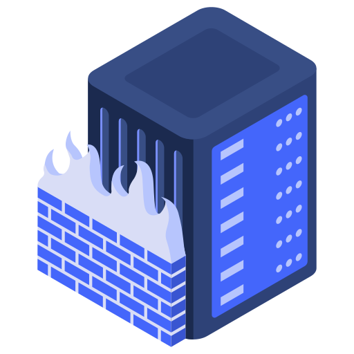

1. Confidentiality(기밀성)
정당한(합법적인) 사용자가 아닌 사용자들은 컴퓨터 시스템상의 데이터 또는 컴퓨터 시스템 간에 통신 회선을 통하여 교환, 전송되는 데이터의 내용을 볼 수 없게 하는 기능이다. 쉽게 말해 정보의 노출 방지를 위해 허가된 사용자만 접근 할 수 있도록 하는 것이다.
2. Integrity(무결성)
데이터 및 네트워크 보안에 있어서 정보가 인가된 사람에 의해서 만이 변경 가능하다는 확실성이다. 정보는 노출되어 있지만 정보(데이터)의 변조를 방지하는 기능이다. 전자결제 같은 경우 금융결제원의 공인인증서를 통해 무결성을 보장 받는다.
3. Availability(가용성)
정보의 필요시 사용할 수 있게 하는 기능이다.